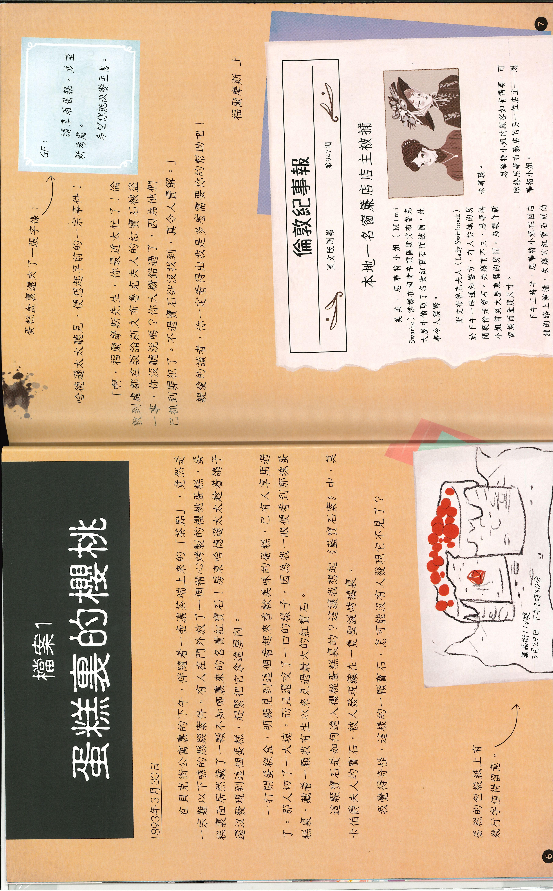
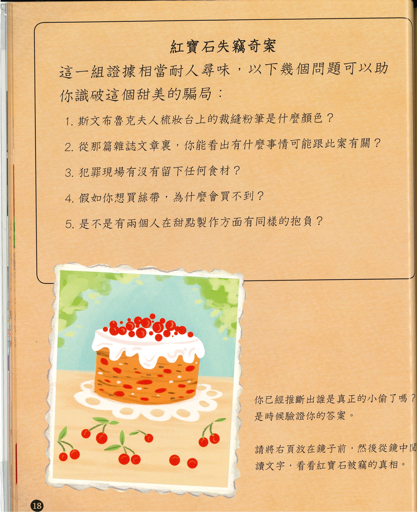

📋 檔案1：蛋糕裏的櫻桃（基本資料登錄）
── 請仔細閱讀下方案件頁面，選出正確的 4 大基本資訊 ──

1️⃣ 請根據文本，選出本案的「失物」是什麼？
A. 🍰 櫻桃蛋糕
B. 💎 紅寶石
C. 🔷 藍寶石
2️⃣ 請選出「失物物主（寶石的主人）」是誰？
A. 🏠 房東哈德遜太太 (Mrs. Hudson)
B. 🛍️ 思華格小姐 (Leonora Swag)
C. 👑 斯文布魯克夫人 (Lady Swinbrook)
3️⃣ 請選出紅寶石的「失竊地點」在哪裡？
A. 🏰 斯文布魯克大屋 (南肯辛頓區)
B. 🏠 貝克街公寓門外
C. 🛍️ 思華布藝店
4️⃣ 根據《倫敦紀事報》報導，警方目前「被捕的人物」是誰？
A. 🏠 房東哈德遜太太 (Mrs. Hudson)
B. 🚨 美美·思華特小姐 (Mimi Swathe - 窗簾商店店主)
C. 🛍️ 思華格小姐 (Leonora Swag)
🖼️ 11 大拆分線索牆
翻閱下方卡片，仔細研讀便利貼上的「偵探麵包屑」：
⏱️ 案件事件排序
請對照線索卡，在前方輸入幾「時」幾「分」，並點擊「⬆️ 上移」或「⬇️ 下移」將事件按正確時間排列：
💡 破案小提示（第 18 頁推理）
── 請邊對照第 18 頁的提問圖卡，邊回答下方的 5 道推理問題 ──

1. 斯文布魯克夫人的梳妝台上，小偷不小心留下了什麼關鍵痕跡？
A. 藍色裁縫粉筆與貸款資料
B. 假牙印模膏粉末與診所收據
C. 一抹麵粉和紫色的絲帶獎章
2. 從《肯辛頓生活雜誌》的報導與廣告中，你能發現什麼重要線索？
A. 福韋克布行刊登了優質布料的推廣廣告
B. 神秘烘焙師「莫拉·貝雅·蘭尼（MB）」奪得冠軍，且正籌劃開設新茶室
C. 斯文布魯克夫人登報重金懸賞失竊的紅寶石
3. 案發現場有沒有留下任何食材？
A. 有，現場只留下了抹麵粉的痕跡
B. 有，現場留下了鮮奶與奶油
C. 完全沒有留下任何食材
4. 假如你想買彩色絲帶裝飾，為什麼會買不到？
A. 絲帶工廠停工導致全倫敦大缺貨
B. 思華布藝店將所有絲帶全數燒毀
C. 各色絲帶都被買去裝飾彩虹蛋糕與烘焙獎章了
5. 是不是有兩個人在甜點製作方面有同樣的抱負？
A. 不是！因為看似是兩個不同的人，其實是同一個人的雙重身分！
B. 是的，美美·思華特與莉奧蘿拉兩人都想開設烘焙坊。
C. 是的，貝利先生（Mr Berry）與吉迪恩·弗朗普都想參加烘焙大賽。
🧩 簡稱解密及尋找真兇
── 請完成人物縮寫比對，並綜合所有線索指認出真正的真兇 ──
第一部分：人物縮寫密碼比對
1️⃣ GF 代表誰？（便利貼提示：貸款申請評估人）
A. 貝利先生（Mr Berry）
B. 克倫斯．恩傑（Clarence Yankit）
C. 吉迪恩．弗朗普（Gideon Frump）
2️⃣ MT 代表誰？（便利貼提示：未婚夫信件、管家手冊）
A. 馬丁．都鐸（Martin Tudor）
B. 馬洛蒂．費斯克（Melody Frisk）
C. 貝利先生（Mr Berry）
3️⃣ M 代表誰？（便利貼提示：急需要錢）
A. 美美．思華特（Mimi Swathe）
B. 瑪麗安．波伊（Miss Boyle）
C. 休伯特太太（Mrs M. Hubert）
4️⃣ MB 代表誰？（便利貼提示：得獎食譜、急需要錢 💡 提示：答案可能不止一個喔！）
A. 瑪麗安．波伊（Miss Boyle）
B. 貝利先生（Mr Berry）
C. 莫拉．貝雅．蘭尼（Moria Bea Lenny）
第二部分：綜合線索指認真兇
🕵️ 綜合所有線索，本案偷走紅寶石的真正主謀是誰？
A. 美美·思華特小姐（Mimi Swathe）
B. 瑪麗安·波伊小姐（Miss Boyle）
C. 莉奧蘿拉·思華格小姐（Leonora Swag）